ภาพสำหรับพรีเซนต์ PANBALL
12 ภาพ · PNG 3840×2160 · โมดูล 05, UML หน้าเว็บ และการไหลของระบบ
ดาวน์โหลดทั้งชุด · คำอธิบายทุกภาพ
จากคำถามถึงเอกสารคำตอบ
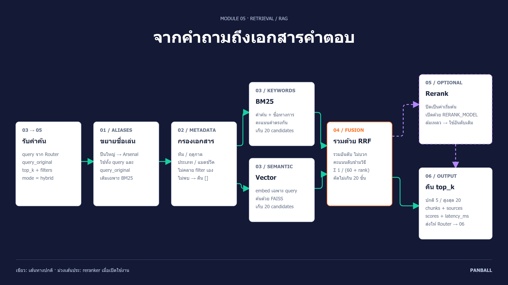
ดาวน์โหลดภาพ PNG · ต้นฉบับแผนภาพ
โมดูล 05 รับ query ที่ Router เตรียมไว้ พร้อมคำถามต้นฉบับและ filters จากนั้นขยายชื่อเล่นเฉพาะ BM25 และจำกัดการค้นหาด้วย metadata ก่อนค้นสองทาง: BM25 จับคำตรงกัน ส่วน Vector จับความหมายด้วย FAISS ระบบนำอันดับมารวมด้วย RRF (k=60) แล้วคืน top_k พร้อมเนื้อหา แหล่งอ้างอิง และข้อมูลเวลาให้ Router ส่งต่อโมดูล 06 หากเปิด reranker จะจัดอันดับ candidates เพิ่ม หาก reranker ล้มเหลวจะใช้อันดับเดิม การค้นหาโหมด hybrid ใช้ candidate_k=20 ตามค่าเริ่มต้น โมดูล 05 ไม่คลาย filters เอง
หลักฐาน: services/05_retrieval_knowledge/app/search/hybrid.py · services/05_retrieval_knowledge/app/api/routes/search.py · services/05_retrieval_knowledge/app/core/config.py
ชื่อเล่นไทย ค้นถึงชื่อทางการ
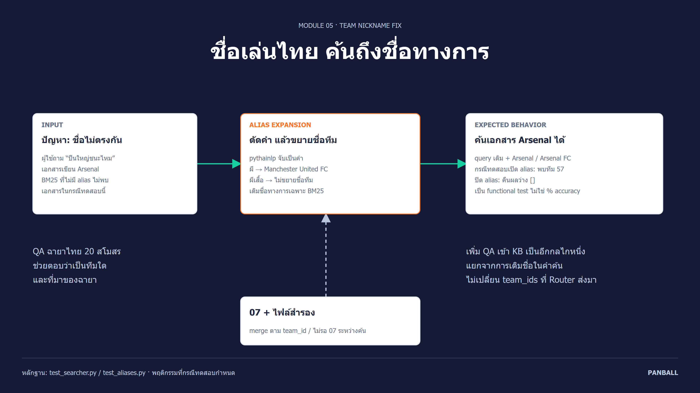
ดาวน์โหลดภาพ PNG · ต้นฉบับแผนภาพ
อาการคือชื่อเล่นไทยไม่ตรงกับชื่อภาษาอังกฤษในเอกสาร วิธีแก้ใช้ pythainlp ตัดคำ แล้วเทียบชื่อเล่นเต็มคำ จึงขยาย “ผี” เป็น Manchester United แต่ไม่จับ “ผีเสื้อ” ผิด จากนั้นต่อชื่อทางการท้าย query เฉพาะฝั่ง BM25 กรณีทดสอบใน repository ใช้คำถามเดียวกันและ fixture เล็ก: เปิด alias พบเอกสาร Arsenal team_id=57 ปิด alias ได้ผลว่าง ทั้งนี้เป็นพฤติกรรมที่ชุดทดสอบตรวจ ไม่ได้รันการทดสอบใหม่ในงานทำภาพ ชื่อเล่นจาก 07 ถูก merge กับไฟล์สำรองแบบ background และยังเพิ่ม QA ฉายาไทย 20 สโมสรเป็นความรู้ในคลังเพื่ออธิบายทีมและที่มาของฉายา
หลักฐาน: services/05_retrieval_knowledge/app/search/aliases.py · services/05_retrieval_knowledge/tests/test_searcher.py · services/05_retrieval_knowledge/tests/test_aliases.py · services/05_retrieval_knowledge/data/thai_nicknames_qa.txt
แม่นขึ้นเท่าไร และวัดอย่างไร
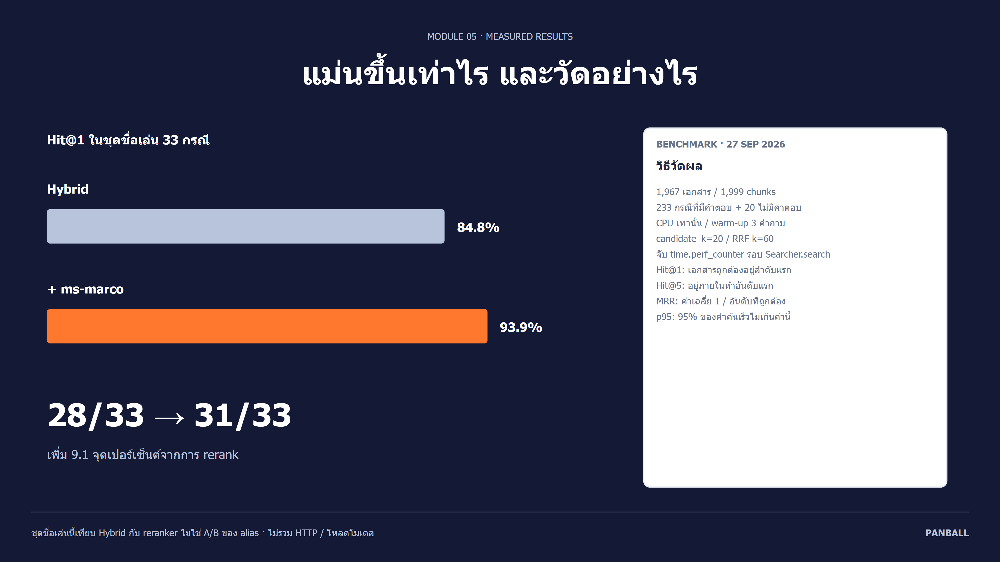
ดาวน์โหลดภาพ PNG · ต้นฉบับแผนภาพ
ในการวัดวันที่ 27 ก.ย. 2026 ชุดชื่อเล่น 33 กรณี Hybrid พบเอกสารคำตอบอันดับแรก 28 กรณี (84.8%) ขณะที่เพิ่ม ms-marco reranker ได้ 31 กรณี (93.9%) เพิ่ม 9.1 จุดเปอร์เซ็นต์ คะแนนนี้เปรียบเทียบวิธีจัดอันดับ ไม่ใช่ผลก่อนและหลังแก้ alias ชุดรวมมี 233 กรณีที่ตอบได้และ 20 กรณีที่ไม่มีคำตอบ ใช้คลัง 1,967 เอกสาร 1,999 chunks โดย 14 เอกสารข้อมูลสดเป็นข้อมูลจำลอง โหลดและวอร์มโมเดลก่อน จับเวลา Searcher.search หนึ่งครั้งต่อคำค้นต่อวิธีบน CPU แล้วสรุป p50/p95 รายกลุ่ม บางกรณีเป็นการเปลี่ยนรูปประโยคจากหัวข้อเดียวกัน จึงไม่ใช่คำถามอิสระทั้งหมด
หลักฐาน: eval/results/retrieval.json · services/05_retrieval_knowledge/scripts/eval_retrieval.py
แม่นขึ้น แต่ต้องอยู่ในงบเวลา
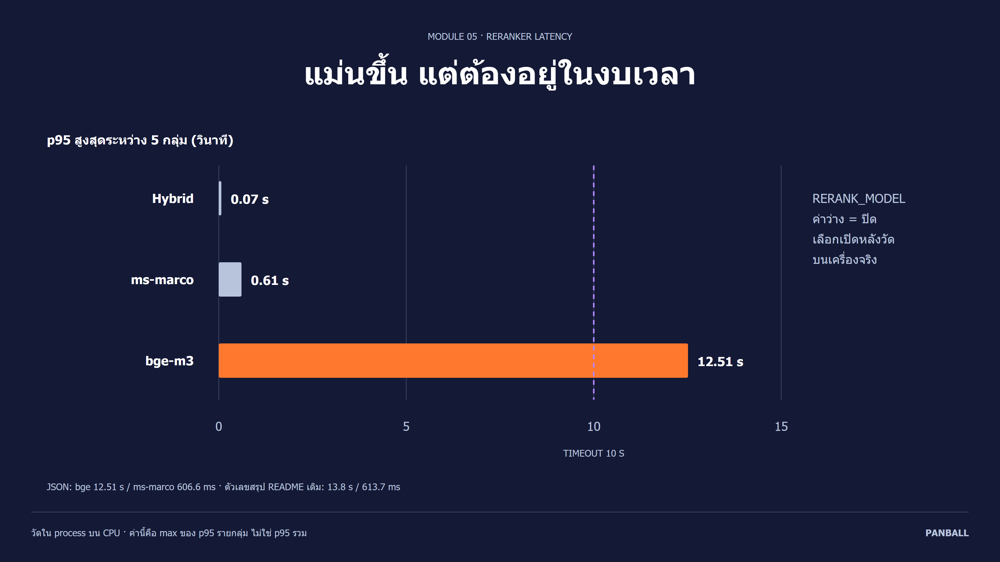
ดาวน์โหลดภาพ PNG · ต้นฉบับแผนภาพ
ผล JSON วันที่ 27 ก.ย. 2026 ให้ p95 สูงสุดระหว่างห้ากลุ่ม: Hybrid 69.2 ms, ms-marco 606.6 ms และ bge-reranker-v2-m3 12.51 วินาที ซึ่ง bge เกิน timeout 10 วินาทีของคำขอ Router ไปโมดูล 05 ตั้งแต่การวัดใน process บน CPU ตัวเลขนี้ไม่ใช่ p95 รวมทุกคำถามหรือเวลาสูงสุดของคำถามเดี่ยว README สรุปท้ายไฟล์ยังมีตัวเลขรอบเดิม 13.8 วินาที/613.7 ms จึงยึด JSON ในภาพ ค่าเริ่มต้น RERANK_MODEL ว่างเพื่อปิด reranker หากจะเปิด ms-marco ต้องวัดซ้ำกับข้อมูลจริงของ 07 คำค้นจริงจาก Router และเครื่อง deploy รวม HTTP งาน rebuild และจำนวน timeout ตามข้อเสนอในรีวิว PR #10
หลักฐาน: eval/results/retrieval.json · services/03_ai_router_agent/app/clients.py · services/05_retrieval_knowledge/app/core/config.py · docs/reviews/05_RETRIEVAL_PR10_FIXES.md
UML ผู้ใช้ทั่วไป
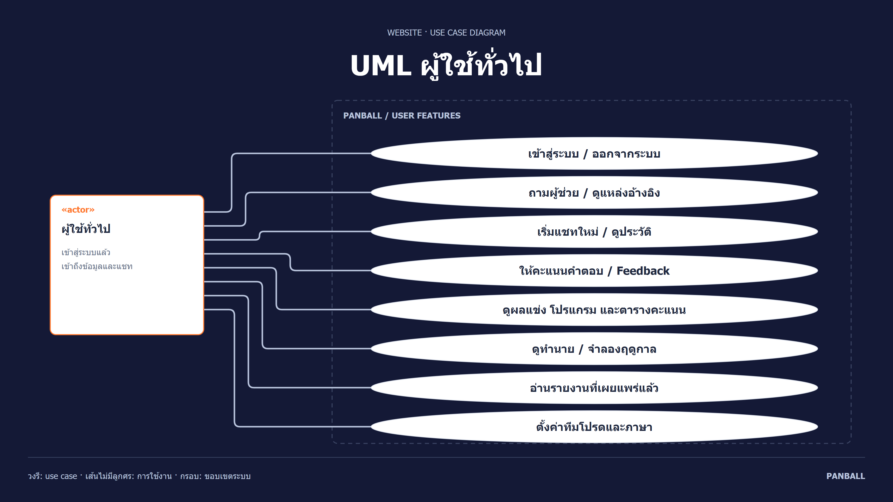
ดาวน์โหลดภาพ PNG · ต้นฉบับแผนภาพ
ผู้ใช้ทั่วไปเข้าสู่ระบบแล้วสามารถถามผู้ช่วย ดูแหล่งอ้างอิง เปิดแชทใหม่ ดูประวัติ และให้ Feedback รวมถึงดูผลแข่ง โปรแกรม ตารางคะแนน การทำนายและจำลองฤดูกาล อ่านรายงานที่เผยแพร่แล้ว และตั้งค่าทีมโปรดหรือภาษา ผู้เยี่ยมชมสามารถสมัครที่ /register ก่อนใช้งาน วงรีคือสิ่งที่ผู้ใช้ทำได้ เส้นระหว่าง actor กับวงรีเป็น association จึงไม่มีหัวลูกศร การทำนายรายนัดแสดงสำหรับแมตช์ก่อนแข่ง
หลักฐาน: services/01_web_app/components/AppShell.tsx · services/01_web_app/components/AppProvider.tsx · docs/diagrams/01-user-use-cases.puml
UML ผู้ดูแลระบบ
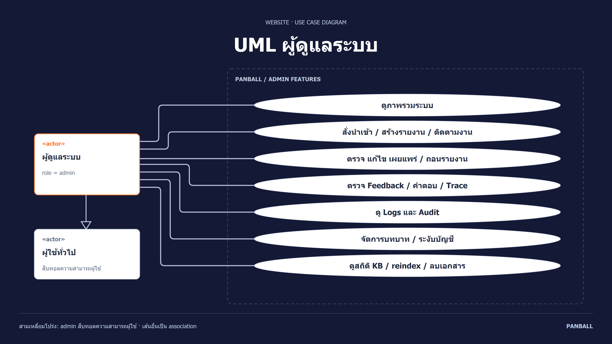
ดาวน์โหลดภาพ PNG · ต้นฉบับแผนภาพ
Admin มีความสามารถทั้งหมดของผู้ใช้ทั่วไปผ่านความสัมพันธ์ generalization และเพิ่มสิทธิ์ดูภาพรวมระบบ สั่ง pipeline นำเข้า/สร้างรายงาน ติดตามงาน ตรวจและเผยแพร่รายงาน ตรวจ Feedback และ Trace ดู Logs/Audit จัดการบทบาทและสถานะบัญชี รวมทั้งดูสถิติ KB สร้างดัชนีและลบเอกสาร ตรวจสิทธิ์ทั้งหน้าเว็บและ API ด้วย require_admin ภาพรวม Logs/Audit ไว้หนึ่ง use case แต่เป็นคนละหน้าเว็บ เช่นเดียวกับรายการย่อยที่รวมไว้เพื่อให้อ่านง่าย
หลักฐาน: services/01_web_app/app/admin/[[...section]]/page.tsx · services/01_web_app/components/AdminExtras.tsx · services/02_api_backend/app/api/deps.py · docs/diagrams/02-admin-use-cases.puml
หน้าเว็บเชื่อมกันอย่างไร
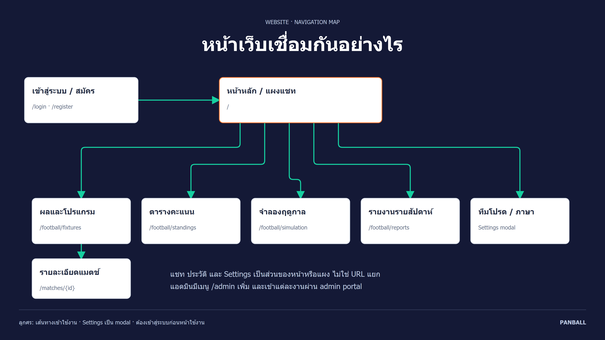
ดาวน์โหลดภาพ PNG · ต้นฉบับแผนภาพ
หลังเข้าสู่ระบบผู้ใช้เริ่มที่หน้าหลักและเปิดแผงแชท จากเมนูเข้าหน้าผลและโปรแกรม ตารางคะแนน จำลองฤดูกาล รายงานรายสัปดาห์ หรือเปิด Settings เพื่อเลือกทีมโปรดและภาษา การเลือกแมตช์จากหน้าผลและโปรแกรมไป /matches/{id} แชท ประวัติ และ Settings ไม่ใช่หน้า URL แยก แอดมินมีเมนู /admin เพิ่ม ส่วนผู้ที่ยังไม่เข้าสู่ระบบจะถูก AppShell พาไป /login ภาพนี้คือ navigation map ไม่ใช่ UML class diagram
หลักฐาน: services/01_web_app/components/AppShell.tsx · services/01_web_app/app/page.tsx · services/01_web_app/app/football/[view]/page.tsx
ภาพรวมระบบทั้ง 8 โมดูล
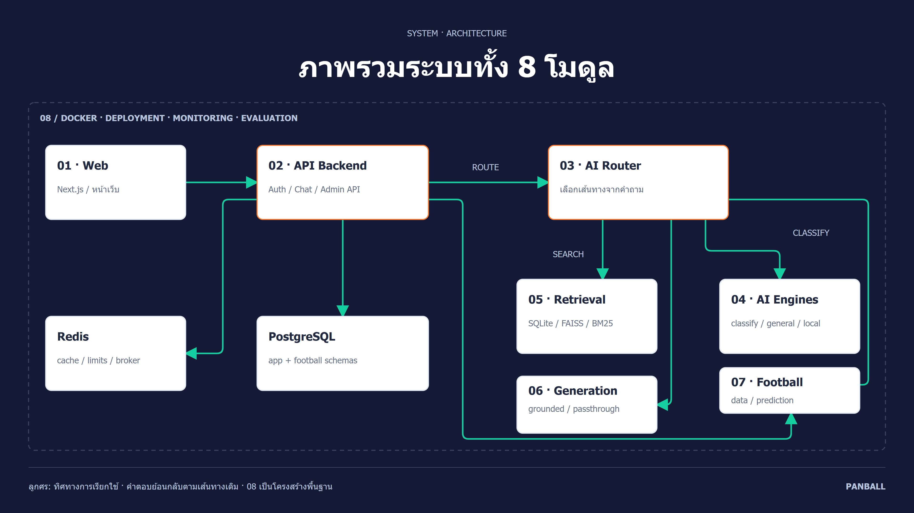
ดาวน์โหลดภาพ PNG · ต้นฉบับแผนภาพ
01 เป็นหน้าเว็บ ส่งคำขอผ่าน Next.js proxy ไป 02 ซึ่งดูแลการเข้าสู่ระบบ บทสนทนา แอดมิน และการบันทึกข้อมูล เมื่อเป็นแชท 02 เรียก 03 เพื่อเลือกเส้นทาง: 04 สำหรับจำแนก/คำตอบทั่วไป/แบบจำลอง local, 05 สำหรับค้นเอกสาร, 06 สำหรับสร้างหรือเรียบเรียงคำตอบ และ 07 สำหรับข้อมูลฟุตบอลหรือการทำนาย หน้าแสดงฟุตบอลเรียก 02 ไป 07 ได้โดยตรง ข้อมูลผู้ใช้และฟุตบอลอยู่ใน schema app และ football ของ Postgres ส่วน 05 มี SQLite durable KB และดัชนี FAISS/BM25 Redis ใช้ cache/rate limit/Celery broker โมดูล 08 คือ Docker deployment monitoring และ evaluation ไม่ใช่ API เพิ่มอีกตัว ภาพแสดง request direction; response ย้อนกลับทางเดิม เส้นทางงานนำเข้าและรายงานอยู่ในภาพถัดไป
หลักฐาน: docker-compose.yml · services/02_api_backend/app/services/chat_service.py · services/03_ai_router_agent/app/router.py · docs/diagrams/04-system-architecture.puml
แชท RAG: ค้นหลักฐานก่อนสร้างคำตอบ
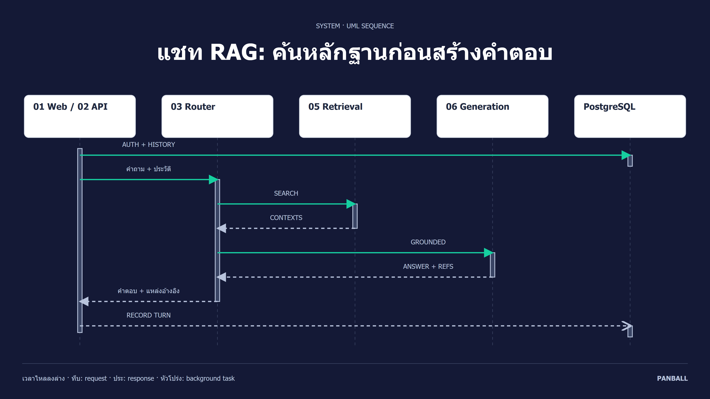
ดาวน์โหลดภาพ PNG · ต้นฉบับแผนภาพ
กรณีนี้คือแชท session เดิมที่ค้นพบข้อมูล 02 ตรวจผู้ใช้ เจ้าของ session และอ่านประวัติจาก Postgres ก่อนส่งคำถามให้ 03 Router เรียก 05 เพื่อรับ chunks และ sources แล้วส่งให้ 06 สร้างคำตอบแบบ grounded จากหลักฐาน คำตอบและแหล่งอ้างอิงย้อนกลับไป 02 และหน้าเว็บ จากนั้น 02 บันทึกบทสนทนาและ trace/log ด้วย FastAPI BackgroundTasks ไม่ใช่ Celery ภาพรวม 01 Web กับ 02 API เป็น lifeline เดียวเพื่อให้อ่านง่าย จึงย่อคู่คำขอ/ตอบกลับของ auth/history ไว้เป็นหนึ่งข้อความ สำหรับ session ใหม่จะมีขั้นสร้าง session และหากไม่พบข้อมูล Router จัดการ fallback/ถามกลับตาม route
หลักฐาน: services/02_api_backend/app/services/chat_service.py · services/02_api_backend/app/response_log/recorder.py · services/03_ai_router_agent/app/router.py · docs/diagrams/05-chat-sequence.puml
ข้อมูลฟุตบอลเข้าสู่คลังอย่างไร
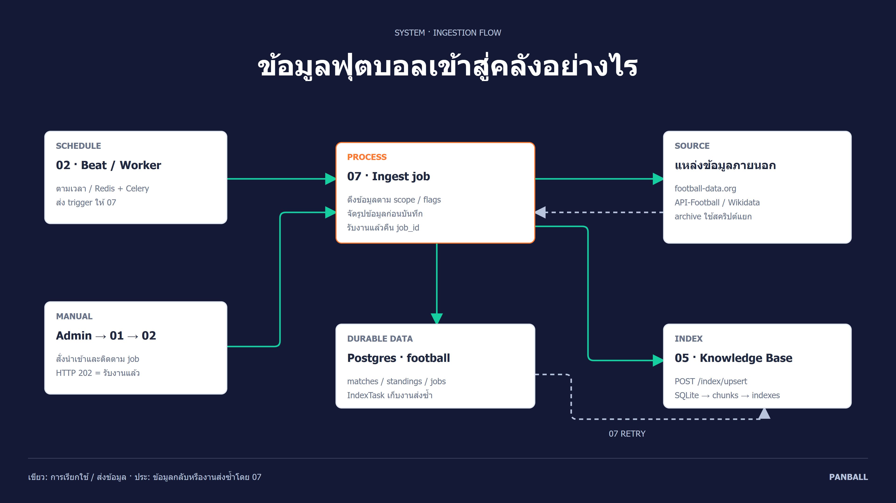
ดาวน์โหลดภาพ PNG · ต้นฉบับแผนภาพ
ข้อมูลเข้าสู่ระบบจากคำสั่งแอดมินหรือ Beat/Worker ตามเวลา ซึ่งส่ง trigger ให้ 07 ทำ ingest 07 ดึง football-data.org, API-Football หรือ Wikidata ตาม scope และ feature flags แล้ว upsert ข้อมูลฟุตบอลกับสถานะงานใน Postgres พร้อมส่งเอกสารไป 05 ผ่าน /index/upsert เพื่อเก็บใน SQLite และสร้าง chunks/FAISS/BM25 งาน IndexTask ช่วยให้ 07 ส่งดัชนีซ้ำเมื่อ 05 ไม่พร้อม Postgres ไม่ได้ส่งข้อมูลหา 05 ด้วยตัวเอง HTTP 202 กับ job_id หมายถึงรับงานแล้ว ต้องติดตามจนเสร็จ OpenFootball/Fjelstul archive ใช้สคริปต์นำเข้าแยก การถามแชทอ่านข้อมูลที่นำเข้าไว้ ส่วน provider LLM อาจถูกเรียกภายนอกตามการตั้งค่า
หลักฐาน: services/02_api_backend/app/workers/tasks.py · services/07_football_data/app/service.py · services/07_football_data/app/main.py · docs/diagrams/06-data-ingestion.puml
รายงาน: สร้างร่าง ตรวจ แล้วเผยแพร่
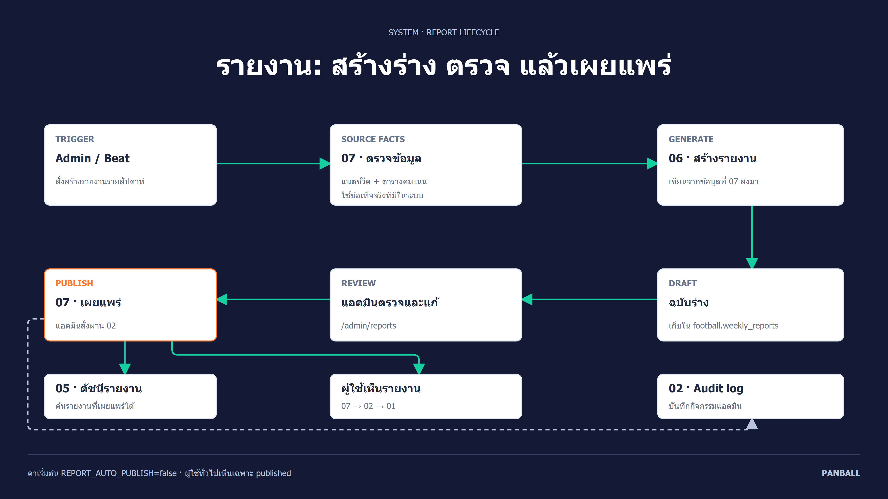
ดาวน์โหลดภาพ PNG · ต้นฉบับแผนภาพ
เมื่อแอดมินหรือ Beat สั่งสร้างรายงาน 07 ตรวจข้อมูลแมตช์วีคและตารางคะแนน แล้วส่งข้อเท็จจริงให้ 06 สร้างเนื้อหา 07 เก็บผลเป็น draft ใน Postgres ค่าเริ่มต้นปิด auto-publish จึงให้แอดมินตรวจหรือแก้ก่อนสั่งเผยแพร่ผ่าน 02 ไป 07 การเผยแพร่ประสานสถานะในฐานข้อมูลกับการ upsert ดัชนี 05 เพื่อให้ค้นรายงานได้ ผู้ใช้เห็นเฉพาะ published ผ่าน 07→02→01 และ 02 เก็บ audit สำหรับคำสั่งแอดมิน การถอนเผยแพร่ต้องประสานสถานะกับดัชนีเช่นกัน หากเปิด auto-publish พฤติกรรมข้ามการตรวจด้วยมือขึ้นกับการตั้งค่า
หลักฐาน: services/07_football_data/app/service.py · services/02_api_backend/app/api/routes/admin/reports.py · docs/diagrams/07-weekly-report-flow.puml
จากสถิติ สู่ความน่าจะเป็น
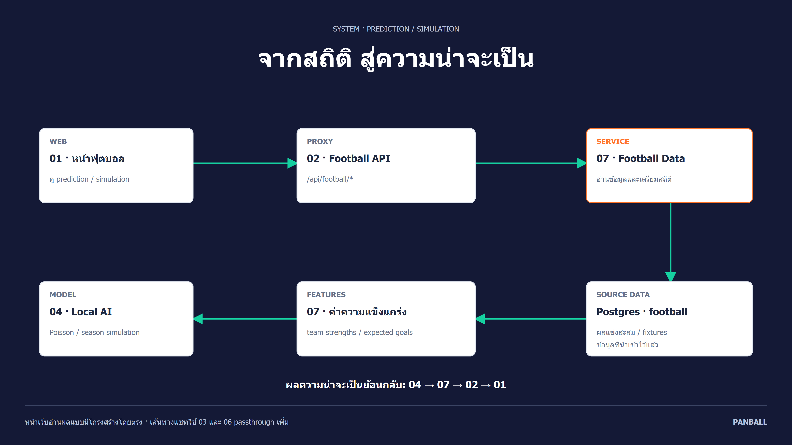
ดาวน์โหลดภาพ PNG · ต้นฉบับแผนภาพ
หน้าเว็บ 01 ขอ prediction หรือ simulation ผ่าน 02 ไป 07 บริการ 07 อ่านผลแข่งสะสมและ fixtures จาก Postgres คำนวณ team strengths และ expected goals แล้วเรียกโมดูล 04 local model เพื่อทำนายรายแมตช์หรือจำลองฤดูกาล ผลความน่าจะเป็นย้อนกลับ 04→07→02→01 เพื่อแสดงผล เส้นทางหน้าเว็บนี้ไม่ต้องผ่าน 06 ถ้าถามการทำนายในแชท 03 จะเรียก 07 และใช้ 06 passthrough เรียบเรียงผล การทำนายเป็นความน่าจะเป็นตามข้อมูลและโมเดล ไม่ใช่ผลการแข่งขันที่เกิดขึ้นแล้ว
หลักฐาน: services/07_football_data/app/simulation.py · services/07_football_data/app/strengths.py · services/04_ai_engines/app/poisson.py · docs/diagrams/08-prediction-flow.puml